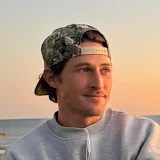
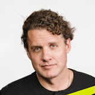
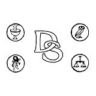

Personas y canales que sigo
Creadores, emprendedores, pensadores y otros canales cuyo contenido sigo habitualmente.

Mr. FourToEight
Emprendimiento, dinero y negocios, con especial foco en Airbnb, inmobiliario y en construir una vida con más libertad.
Ver canal →Bryan Johnson
Longevidad, salud y hábitos medidos con datos, desde sueño y nutrición hasta protocolos de rendimiento y envejecimiento.
Ver canal →Robert Greene
Psicología humana, poder, estrategia y dominio personal explicados a partir de las ideas centrales de sus libros.
Ver canal →Mario Alonso Puig
Potencial humano, liderazgo, comunicación y gestión del cambio, combinando divulgación sobre mente, bienestar y desarrollo personal.
Ver canal →Greg Lav
Disciplina, emprendimiento y crecimiento personal desde la experiencia de construir empresas y aprender a sostener metas cada vez mayores.
Ver canal →Irene Albacete
Inteligencia emocional, mentalidad, identidad y liderazgo personal, con herramientas para conocerte mejor y tomar más control de tu vida.
Ver canal →
Mark Manson
Desarrollo personal, relaciones y psicología con un enfoque directo sobre cómo vivir mejor, elegir tus valores y afrontar problemas reales.
Ver canal →Dan Martell
Emprendimiento, SaaS, liderazgo y productividad para construir mejores empresas sin sacrificar por completo tu tiempo y tu libertad.
Ver canal →Bolsacava
Bolsa, mercados financieros y operativa, con análisis y explicaciones orientadas a entender mejor la inversión y la gestión del riesgo.
Ver canal →Lethal Crysis
Viajes y documentales sobre culturas, conflictos y realidades poco conocidas, especialmente en lugares remotos y experiencias sobre el terreno.
Ver canal →
Daily Stoic
Estoicismo aplicado a la vida cotidiana: resiliencia, autocontrol y perspectiva a partir de Marco Aurelio, Séneca y Epicteto.
Ver canal →Mark Tilbury
Finanzas personales, inversión y emprendimiento explicados de forma accesible, con ideas sobre dinero, negocios y construcción de patrimonio.
Ver canal →